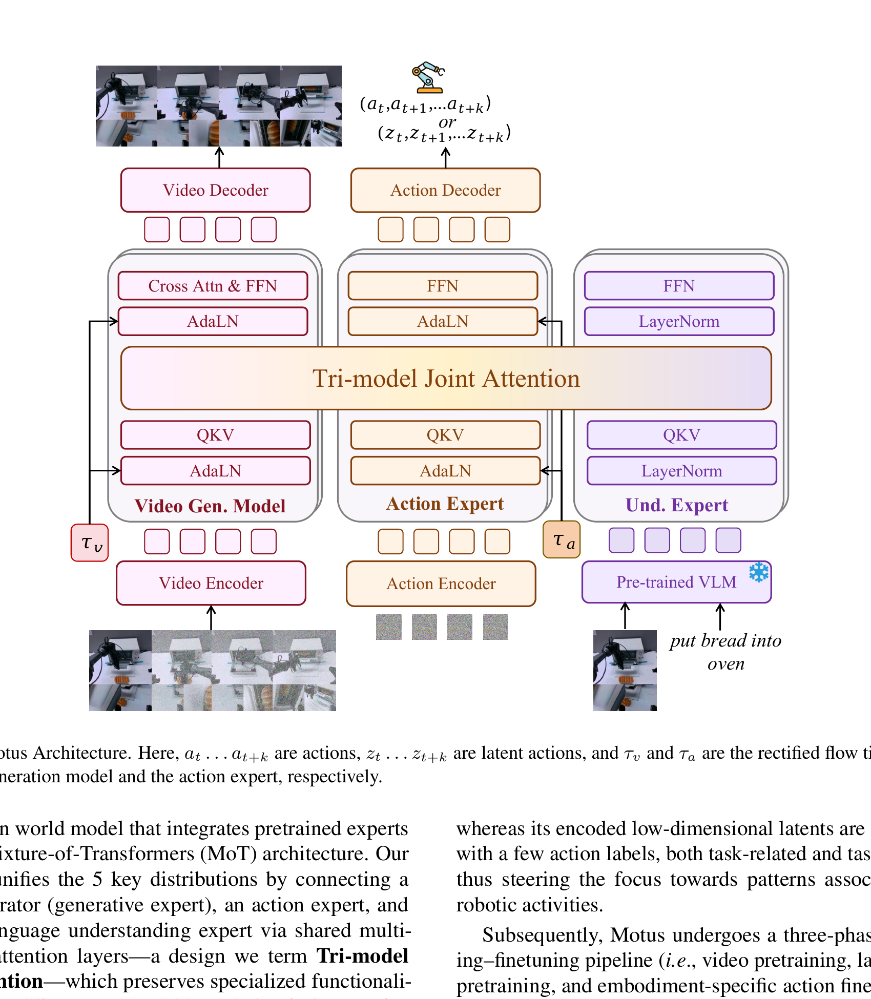

Motus: A Unified Latent Action World Model
Hongzhe Bi 等 · arXiv:2512.13030 v2 · 2025 技术报告 · Zotero JTLAWYYC
Motus 用视频生成、动作与语义理解三个 expert 的共享注意力，把 VLA、WM、IDM、VGM 和视频—动作联合预测放进一个 rectified-flow 模型；不同模态可拥有独立噪声时刻，因此同一 checkpoint 能切换多种条件分布。
Introduction：为什么一个机器人系统不该为五种推断任务训练五套模型
VLA 预测动作、world model 预测动作后果、IDM 从状态变化反推动作、视频模型生成视觉未来，joint WAM 同时生成世界与动作。它们本质上只是同一联合分布在不同变量已知时的条件化方式，却常由不同架构和数据分别训练。Motus 想把五种分布放进一个模型，并同时继承 VLM 的语义理解、视频生成模型的动力学先验和大规模机器人轨迹的物理交互经验。
展开原文 · 统一目标
“unify the modeling of five key distributions”
Related Work：Motus 不只是 UWM 加大模型
统一多模态模型已用 Mixture-of-Transformers 共享 attention，但具身模型仍分成理解、视频和动作系统。UWM 首先用统一 diffusion backbone 表达 WM/VLA/IDM/VGM/joint prediction，却往往从较小基座或有限先验起步。latent-action 方法可用无动作视频，但 RGB 重建易受外观干扰。Motus 的组合是三 expert MoT、视频/动作独立噪声时刻、光流 latent action，以及从互联网视频到目标本体的三阶段数据金字塔。
| Unified multimodal | 共享 attention 统一理解和生成，但通常不含机器人动作与本体状态。 |
| UWM | 统一多种条件分布，是直接结构前驱；Motus 强调同时接入 VLM、VGM 和机器人交互先验。 |
| Latent action | 从视频变化得到动作代理；Motus 采用光流压缩，减少纹理等任务无关信息。 |
| 传统 VLA | 直接建模 $p(a|o,l)$；Motus 让动作与未来视频在共享 attention 中互相约束。 |
§1 它统一的不是“输出头”，而是五种分布
| VLA | $p(a_{t+1:t+k}\mid o_t,l)$ |
| World Model | $p(o_{t+1:t+k}\mid o_t,a_{t+1:t+k})$ |
| IDM | $p(a_{t+1:t+k}\mid o_{t:t+k})$ |
| Video Generator | $p(o_{t+1:t+k}\mid o_t,l)$ |
| Joint WAM | $p(o_{t+1:t+k},a_{t+1:t+k}\mid o_t,l)$ |
§2 Mixture-of-Transformers：三专家、同一注意力场

1. 语义理解
VLM 把当前画面与指令变成任务条件。
输入是什么：当前任务提供的原始观测、指令、机器人状态或训练数据。先明确这些输入，才能判断后面的结论是否用了部署时拿不到的信息。
这一步究竟做什么：本步骤执行“语义理解”。具体来说，VLM 把当前画面与指令变成任务条件。 这里处理的只是整条链路中的一个接口：把上一步的结果整理成下一步能够正确读取和继续计算的形式。
输出到哪里：经过本步骤处理、含义更明确的中间结果。这个结果会交给下一步“世界分支”继续处理。
为什么不能省略：它把未经处理的原始问题变成后续模块可以计算的输入，是整条链路的起点。
2. 世界分支
视频 expert 在 $\tau_v$ 上去噪未来视觉 latent。
输入是什么：来自上一步“语义理解”的产物：经过本步骤处理、含义更明确的中间结果。本步骤还会按论文设置读取当前条件、时间步或训练信号。
这一步究竟做什么：本步骤执行“世界分支”。具体来说，视频 expert 在 $\tau_v$ 上去噪未来视觉 latent。 这里处理的只是整条链路中的一个接口：把上一步的结果整理成下一步能够正确读取和继续计算的形式。
输出到哪里：一组比原始输入更紧凑的内部特征；它不是最终动作或画面。这个结果会交给下一步“动作分支”继续处理。
为什么不能省略：它承担上下两步之间的接口；缺少它，前一步产生的信息无法以正确格式或正确含义传到下一步。
3. 动作分支
动作 expert 在 $\tau_a$ 上生成真实或 latent 动作块。
输入是什么：来自上一步“世界分支”的产物：一组比原始输入更紧凑的内部特征；它不是最终动作或画面。本步骤还会按论文设置读取当前条件、时间步或训练信号。
这一步究竟做什么：本步骤执行“动作分支”。具体来说，动作 expert 在 $\tau_a$ 上生成真实或 latent 动作块。 模型从相同起点产生候选未来，后续模块再检查这些未来是否符合条件、物理规律或动作需要。
输出到哪里：一组比原始输入更紧凑的内部特征；它不是最终动作或画面。这个结果会交给下一步“跨模态交换”继续处理。
为什么不能省略：它承担上下两步之间的接口；缺少它，前一步产生的信息无法以正确格式或正确含义传到下一步。
4. 跨模态交换
共享注意力让未来、动作与语义彼此约束，再由各自 decoder 输出。
输入是什么：来自上一步“动作分支”的产物：一组比原始输入更紧凑的内部特征；它不是最终动作或画面。本步骤还会按论文设置读取当前条件、时间步或训练信号。
这一步究竟做什么：本步骤执行“跨模态交换”。具体来说，共享注意力让未来、动作与语义彼此约束，再由各自 decoder 输出。 这个动作会真正改变环境，所以系统还要读取执行后的新观测，检查模型预期与现实之间的差距。
输出到哪里：经过本步骤处理、含义更明确的中间结果。这是图中这条链路的最终产物，随后会进入真实执行、模型更新或指标评测。
为什么不能省略：它把前面得到的内部结果落实为可执行动作、可训练模型或可解释指标，完成从方法到结果的最后一步。
§3 独立噪声时刻：条件分布的“旋钮”
- $\tau_a,\tau_v$
- 动作与视频各自采样噪声强度；可以一边已知、一边生成。
- 都去噪
- 得到 joint video-action prediction。
- 固定一侧
- 可退化为 WM、IDM、VLA 或视频生成等条件任务。
§4 Optical-flow latent action 与三阶段训练
Motus 用光流作为 pixel-level “delta action”，再由深压缩自编码器得到低维 latent；少量动作标签用于把表示偏向机器人活动。训练依次为视频预训练、latent-action 预训练、本体特定动作微调，并使用 web、第一视角人类、仿真、多机器人与目标机器人等六层数据。
§5 证据与局限
实验归因与复现变量
Motus 的结构、基座和数据都同时变化，复现时必须把“统一分布建模”与“更多视频/机器人数据”分开。最有说服力的消融应固定总数据和参数量，只改变独立 timestep、共享 attention 与 latent-action 阶段。
- 明确五种任务对应的视频/动作噪声时刻组合，以及条件侧是否仍被加噪。
- 分别关闭 understanding、video、action expert 的预训练权重，定位先验来源。
- 报告光流 autoencoder 的压缩率和重建对象，检查是否把相机运动当动作。
- 控制各数据层的 token 数而非只报数据集名称。
- 同时报告视频、动作与闭环指标，防止一种模态改善掩盖另一种退化。
§6 路线定位
截图把 Motus 放在 latent-action 线是合理的，但从推断接口看它也是典型 Joint-Diffusion WAM：世界 latent 与动作在一个 MoT/rectified-flow 系统内共同生成。